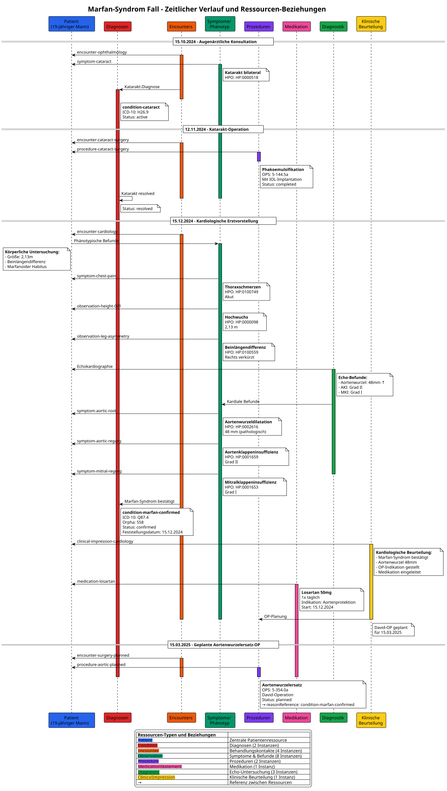

MII IG Kerndatensatz-Modul Seltene Erkrankungen - Local Development build (v2027.0.0-ballot.rc1) built by the FHIR (HL7® FHIR® Standard) Build Tools. See the Directory of published versions
Fallbeispiel Marfan-Syndrom
Marfan-Syndrom Fallbeispiel - Semantische Annotationen
Übersicht
Dieses Dokument enthält die semantischen Annotationen für ein Fallbeispiel eines Marfan-Syndroms bei einem 19-jährigen männlichen Patienten.
Zeitlicher Verlauf
1. Augenärztliche Vorstellung (15.10.2024)
- Anlass: Katarakt-Konsultation
- Befund: Katarakt beidseits
- Setting: Ambulant
- Weiteres Vorgehen: OP-Planung
2. Katarakt-Operation (12.11.2024)
- Prozedur: Phakoemulsifikation mit Linsenimplantation
- Setting: Ambulant/Tagesklinik
- Komplikationen: Keine
- Befund: Erfolgreiche Linsenimplantation
3. Kardiologische Erstvorstellung (15.12.2024)
- Einweisungsgrund: Thoraxschmerzen, Verdacht auf Marfan-Syndrom
- Diagnose: Marfan-Syndrom bestätigt
- Befunde:
- Aortenwurzeldilatation (48mm)
- Aortenklappeninsuffizienz Grad II
- Mitralklappeninsuffizienz Grad I
- Therapie: Losartan 50mg 1x täglich initiiert
4. Geplante Aortenwurzelersatz-OP (15.03.2025)
- Prozedur: Composite-Graft-Implantation (David-OP)
- Setting: Stationär geplant
- Indikation: Progrediente Aortenwurzeldilatation bei Marfan-Syndrom
Semantische Annotationen
Patient
- Geschlecht: Männlich
- Geburtsdatum: ~2005 (19 Jahre alt)
- Körpergröße: 2,13 m (pathologisch erhöht)
- Besonderheiten:
- Beinlängendifferenz (rechts verkürzt)
- Marfanoider Habitus
Phänotypische Merkmale
Skelettale Manifestationen
- Hochwuchs:
- HPO: HP:0000098 "Tall stature"
- Wert: 2,13 m
- Perzentile: >99. Perzentile
- Beinlängendifferenz:
- HPO: HP:0100559 "Lower limb asymmetry"
- Beschreibung: Rechtes Bein verkürzt
- SNOMED CT: 707738004 "Leg length discrepancy"
Kardiovaskuläre Manifestationen
- Thoraxschmerzen:
- HPO: HP:0100749 "Chest pain"
- SNOMED CT: 29857009 "Chest pain"
- Onset: Akut
- Aortenwurzeldilatation:
- HPO: HP:0002616 "Aortic root aneurysm"
- SNOMED CT: 251036003 "Aortic root dilatation"
- Messwert: 48 mm (pathologisch erweitert)
- Aortenklappeninsuffizienz:
- HPO: HP:0001659 "Aortic regurgitation"
- SNOMED CT: 60234000 "Aortic valve regurgitation"
- Schweregrad: Grad II (moderat)
- Mitralklappeninsuffizienz:
- HPO: HP:0001653 "Mitral regurgitation"
- SNOMED CT: 48724000 "Mitral valve regurgitation"
- Schweregrad: Grad I (mild)
Ophthalmologische Manifestationen
- Katarakt:
- HPO: HP:0000518 "Cataract"
- ICD-10-GM: H26.9 "Katarakt, nicht näher bezeichnet"
- SNOMED CT: 193570009 "Cataract"
- Lokalisation: Bilateral
Diagnosen
- Hauptdiagnose:
- Bezeichnung: Marfan-Syndrom
- ICD-10-GM: Q87.4 "Marfan-Syndrom"
- Orpha: 558 "Marfan syndrome"
- SNOMED CT: 19346006 "Marfan syndrome"
- OMIM: 154700
- Status: Klinisch bestätigt
- Feststellungsdatum: 15.12.2024
- Nebendiagnose:
- Bezeichnung: Katarakt
- ICD-10-GM: H26.9 "Katarakt, nicht näher bezeichnet"
- Status: Operativ behandelt
Prozeduren
- Katarakt-Operation:
- OPS-Code: 5-144.5a "Extrakapsuläre Extraktion der Linse [ECCE]: Phakoemulsifikation: Mit Einführung einer kapselfixierten Hinterkammerlinse, monofokale Intraokularlinse"
- SNOMED CT: 54885007 "Phacoemulsification of cataract with intraocular lens implantation"
- Datum: 12.11.2024
- Status: Abgeschlossen
- Geplante Aortenwurzelersatz-OP:
- OPS-Code: 5-354.0a "Andere Operationen an Herzklappen: Aortenklappe: Klappenrekonstruktion"
- SNOMED CT: 119564002 "Aortic root replacement"
- Geplantes Datum: 15.03.2025
- Status: Geplant
- Technik: David-Operation (Valve-sparing root replacement)
Medikation
- Losartan:
- ATC-Code: C09CA01
- Dosierung: 50 mg
- Frequenz: 1x täglich
- Indikation: Progressionshemmung der Aortenwurzeldilatation
- Startdatum: 15.12.2024
- SNOMED CT: 387069000 "Losartan"
Diagnostische Untersuchungen
Echokardiographie (15.12.2024)
- Aortenwurzeldurchmesser:
- LOINC: 79992-2 "Aortic root diameter by US"
- Wert: 48 mm
- Interpretation: Pathologisch erweitert
- Aortenklappeninsuffizienz-Grad:
- LOINC: 80140-5 "Aortic valve regurgitation severity by US"
- Wert: Grad II
- Interpretation: Moderat
- Mitralklappeninsuffizienz-Grad:
- LOINC: 80186-8 "Mitral valve regurgitation severity by US"
- Wert: Grad I
- Interpretation: Mild
Behandlungsplan
- Kardiologische Überwachung: Alle 6 Monate Echokardiographie
- Medikamentöse Therapie: Fortführung Losartan
- Operative Therapie: Elektive Aortenwurzelersatz-OP am 15.03.2025
- Genetische Beratung: Empfohlen für Familienplanung
- Ophthalmologische Nachsorge: Post-operative Kontrollen
FHIR-Mapping
Verwendete Profile
Die Liste nennt, was die Beispielinstanzen tatsächlich in meta.profile
deklarieren. Ressourcen ohne Eintrag verwenden bewusst die blanke
FHIR-Basisressource: Dieses Modul profiliert, was für seltene Erkrankungen
spezifisch ist, und verweist für den Rest auf die Nachbarmodule — Laborwerte
gehören ins Laborbefund-Modul, Variantenbefunde in den
Molekulargenetischen Befund. Keines von beiden ist eine Abhängigkeit dieses
Moduls, und nichts hier erbt davon.
- Klinische Diagnose:
mii-pr-seltene-clinical-diagnosis
- Genetische Diagnose:
mii-pr-seltene-genetic-diagnosis
- Therapieempfehlung, medikamentös (Losartan):
mii-pr-seltene-therapieempfehlung
- Therapieempfehlung, nicht-medikamentös:
mii-pr-seltene-therapieempfehlung-nicht-medikamentoes
- Unprofilierte Basisressourcen: Patient und das Transaktions-Bundle
Ressourcen-Übersicht
Patient und Phänotyp
| Ressource ID |
Typ |
Beschreibung |
Datum |
Status/Details |
mii-exa-seltene-patient-marfan-001 |
Patient |
19-jähriger Mann |
Geburt: ~2005 |
ID: MRF-2024-001 |
mii-exa-seltene-observation-height-001 |
Observation |
Körpergröße |
15.12.2024 |
2,13 m (HPO:0000098) |
mii-exa-seltene-observation-leg-asymmetry |
Observation |
Beinlängendifferenz |
15.12.2024 |
Rechts verkürzt (HPO:0100559) |
Symptome und Befunde
| Ressource ID |
Typ |
Beschreibung |
Datum |
HPO Code |
Schweregrad |
mii-exa-seltene-symptom-chest-pain |
Observation |
Thoraxschmerzen |
15.12.2024 |
HP:0100749 |
Akut |
mii-exa-seltene-symptom-aortic-root |
Observation |
Aortenwurzeldilatation |
15.12.2024 |
HP:0002616 |
48mm |
mii-exa-seltene-symptom-aortic-regurg |
Observation |
Aortenklappeninsuffizienz |
15.12.2024 |
HP:0001659 |
Grad II |
mii-exa-seltene-symptom-mitral-regurg |
Observation |
Mitralklappeninsuffizienz |
15.12.2024 |
HP:0001653 |
Grad I |
mii-exa-seltene-symptom-cataract |
Observation |
Katarakt bilateral |
15.10.2024 |
HP:0000518 |
Bilateral |
Diagnosen
| Ressource ID |
Typ |
Beschreibung |
Feststellungsdatum |
ICD-10 |
Orpha |
mii-exa-seltene-condition-marfan-genetic |
Condition |
Marfan-Syndrom |
15.12.2024 |
Q87.4 |
558 |
mii-exa-seltene-condition-cataract |
Condition |
Katarakt bilateral |
15.10.2024 |
H26.9 |
- |
Prozeduren
| Ressource ID |
Typ |
Beschreibung |
Datum |
OPS Code |
Status |
mii-exa-seltene-procedure-cataract-surgery |
Procedure |
Phakoemulsifikation mit IOL |
12.11.2024 |
5-144.5a |
Abgeschlossen |
mii-exa-seltene-procedure-aortic-planned |
Procedure |
Aortenwurzelersatz (David-OP) |
15.03.2025 |
5-354.0a |
Geplant |
Medikation
| Ressource ID |
Typ |
Medikament |
Dosierung |
Start |
Indikation |
mii-exa-seltene-medication-losartan |
MedicationStatement |
Losartan |
50mg 1x täglich |
15.12.2024 |
Aortenprotektion |
Diagnostik
| Ressource ID |
Typ |
Untersuchung |
Datum |
Wichtige Befunde |
mii-exa-seltene-observation-echo-aortic |
Observation |
Aortenwurzel-Echo |
15.12.2024 |
48mm (pathologisch) |
mii-exa-seltene-observation-echo-av |
Observation |
AK-Insuffizienz Echo |
15.12.2024 |
Grad II |
mii-exa-seltene-observation-echo-mv |
Observation |
MK-Insuffizienz Echo |
15.12.2024 |
Grad I |
Behandlungskontakte
| Ressource ID |
Typ |
Beschreibung |
Datum |
Setting |
Fachbereich |
mii-exa-seltene-encounter-ophthalmology |
Encounter |
Augenärztliche Konsultation |
15.10.2024 |
Ambulant |
Ophthalmologie |
mii-exa-seltene-encounter-cataract-surgery |
Encounter |
Katarakt-OP |
12.11.2024 |
Tagesklinik |
Ophthalmologie |
mii-exa-seltene-encounter-cardiology |
Encounter |
Kardiologische Erstvorstellung |
15.12.2024 |
Ambulant |
Kardiologie |
mii-exa-seltene-encounter-surgery-planned |
Encounter |
Geplante Herzchirurgie |
15.03.2025 |
Stationär |
Herzchirurgie |
Klinische Beurteilungen
| Ressource ID |
Typ |
Beschreibung |
Datum |
Wichtige Aspekte |
mii-exa-seltene-clinical-impression-seltene-assessment |
ClinicalImpression |
Kardiologische Beurteilung |
15.12.2024 |
Marfan bestätigt, OP-Indikation |
Bundle
| Ressource ID |
Typ |
Beschreibung |
Anzahl Einträge |
mii-exa-seltene-bundle-marfan-complete |
Bundle |
Transaction Bundle mit allen Ressourcen |
20 Ressourcen |
Implementierung
Die vollständigen FHIR-Ressourcen sind in den FSH-Quellen dieses Moduls definiert (input/fsh/Beispiel_Marfan/), inklusive Transaction Bundle.
Ressourcen-Diagramme
Gesamtübersicht aller Ressourcen und Beziehungen

Zeitlicher Verlauf
